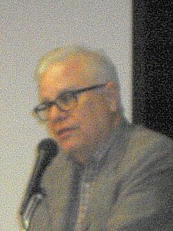

Whitley Strieber
Novelist and abduction experiencer

A horror novelist (The Wolfen, The Hunger) whose 1987 book Communion described being taken by beings he called "the visitors" from his New York cabin in December 1985. It became a No. 1 bestseller and was made into a 1989 film. 1,2
He has written many more books on his experiences and hosts the long-running Dreamland podcast. His claims are unverified; skeptics point to sleep paralysis. 1
Open in the interactive Watcher
Related
- Strieber's cabin (Communion) His 1985 experience
- Communion Wrote Communion
- The Super Natural Co-wrote The Super Natural
Sources
- Whitley Strieber Wikipedia
- Communion (Strieber book) Wikipedia